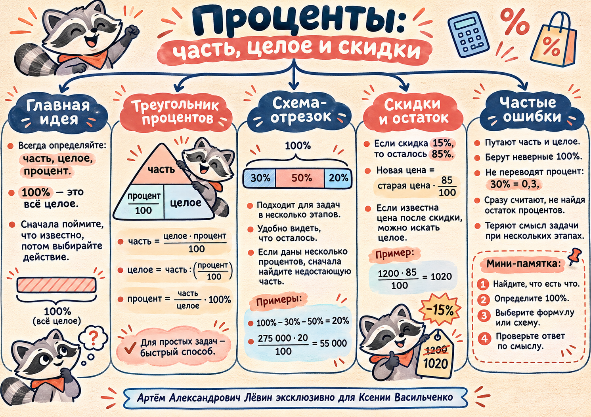

Целое · C
Всё исходное количество. Ему всегда соответствуют 100%.
Занятие / 12 ноября 2026
Проценты: как найти часть, восстановить целое и определить, сколько осталось после расходов или скидки. В каждом решении первым делом называем величину, которая составляет всё целое.
«Процент» не существует отдельно от своего целого. Сначала определяем, что именно является 100%, потом сопоставляем процент и количество.
Всё исходное количество. Ему всегда соответствуют 100%.
Количество внутри целого — деньги, люди, масса, цена после скидки.
Сколько сотых от целого составляет часть. Перед вычислением делим p на 100.
6% = 0,06; 30% = 0,3; 85% = 0,85. Запись p% обозначает долю p/100; просто число p без деления на 100 использовать нельзя.
Сверху — часть. Внизу — доля и целое. Получаем часть умножением двух нижних величин; одну из нижних восстанавливаем делением верхней на известную нижнюю.
Целое умножить на долю.
Часть разделить на ненулевую долю.
Отношение части к ненулевому целому умножить на 100%.
Над отрезком отмечаем количество, под ним — проценты. Если все указанные расходы относятся к одной первоначальной сумме, их проценты складываются как части одного целого.
275 тыс. руб. — это 100%. Рабочим выплачено 30%, на материалы потрачено 50%, остальное — сантехника.
Ответ: 55 тыс. руб.
Всего 320 тыс. руб.; на билеты ушло 25%, на проживание 45%. Сколько осталось на экскурсии и питание?
Ответ: 96 тыс. руб.
Если в условии процент относится не к первоначальной сумме, а к остатку, появляется новое целое. В таком случае нельзя автоматически вычитать все проценты из 100%.
| Дано | Что принимаем за 100% | Что ищем |
|---|---|---|
| 275 тыс. руб.; 30% и 50% потрачены | Все расходы на ремонт | Оставшиеся 20% в рублях |
| 12,5 кг ягод; сахар составляет 6% | Вся масса ягод | Массу сахара: 0,75 кг |
Расположите данные в треугольнике прежде, чем выбирать действие.
Верх треугольника: 24 человека. Внизу: доля 30/100 = 0,3. Ищем всё количество.
24 : 0,3 = 80
Проверка: 80 × 0,3 = 24 человека. При делении на 0,3 удобно преобразовать дробь: 24 : 0,3 = 240 : 3.
Целое — 120 саженцев, часть — 42. Сначала найдём отношение, затем переведём в проценты.
42 : 120 = 0,35 = 35%
Проверка: 35% от 120 — это 42 саженца.
Если цена снизилась на 15%, покупатель платит 85% первоначальной стоимости. При обратной задаче новая цена — это известная часть, а не 100%.
Скидка — 15%. Осталось 100% − 15% = 85%.
1200 × 85 / 100 = 1020
Проверка: скидка 180 рублей, значит 1200 − 180 = 1020 рублей.
После скидки 20% осталось 80% первоначальной цены.
840 : 0,8 = 1050
Проверка: 1050 × 0,8 = 840 рублей.
В пособии есть ещё один обратный пример: конструктор после скидки 20% стоит 1040 рублей. Исходная цена — 1040 : 0,8 = 1300 рублей. Не прибавляйте 20% к новой цене: база скидки другая.
Можно идти вперёд и назад по этапам. Главное — не начинать вычисления, пока не определены целое и искомая величина.
Найдите величину, которая соответствует 100%. В задаче о клубнике это все 12,5 кг ягод, а 6% — доля сахара.
Требуется часть, целое или процент? От этого зависит формула. При нескольких статьях расходов сначала найдите остаток процентов.
Часть — умножаем целое на p/100; целое — делим часть на p/100; процент — делим часть на целое и умножаем на 100.
Проверьте единицы, знак, правдоподобие и подстановку. Например, 30% от 80 человек действительно составляет 24 человека.
Перед тем как записать ответ, проверьте не только вычисления, но и смысл использованных процентов.
Выберите действие. Задачи и числа взяты из разобранных примеров.
Известна часть. Требуется количество всех участников.
За 100% принимаем цену до скидки.
Сначала определите, что составляет 100%, затем выберите треугольник или схему-отрезок. Отметки сохраняются только в этом браузере; они не повышают уровень освоения в карте компетенций.
Выполнено 0 из 10
| № | Ответ |
|---|---|
| 1 | 35 |
| 2 | 1 кг |
| 3 | 90 человек |
| 4 | 25% |
| 5 | 12 600 руб. |
| 6 | 2040 руб. |
| 7 | 900 руб. |
| 8 | 40% |
| 9 | 156 тыс. руб. |
| 10 | 2000 руб. до скидки; скидка 300 руб. |
Печатный чек-лист, исходный LaTeX и иллюстрация к уроку доступны в материалах занятия.
